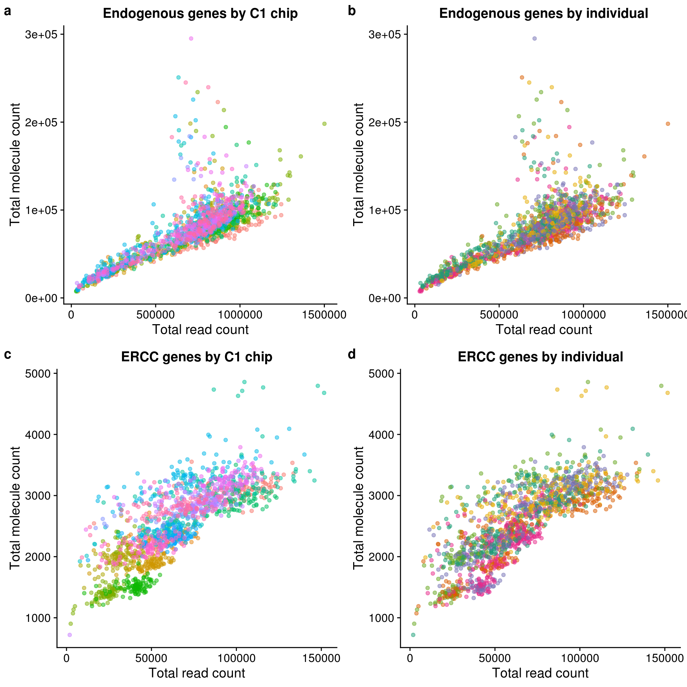

Read to molecule conversion
John Blischak
2017-11-29
Last updated: 2017-12-13
Code version: cf9e702
Setup
library("cowplot")
library("dplyr")Warning: Installed Rcpp (0.12.14) different from Rcpp used to build dplyr (0.12.10).
Please reinstall dplyr to avoid random crashes or undefined behavior.library("DT")
library("ggplot2")
library("reshape2")
library("Biobase")
theme_set(theme_cowplot())fname <- Sys.glob("../data/eset/*.rds")
eset <- Reduce(combine, Map(readRDS, fname))
pData(eset)$experiment <- as.factor(pData(eset)$experiment)Reads versus molecules
conv_hs_c1 <- ggplot(pData(eset), aes(x = reads_hs, y = mol_hs,
color = experiment)) +
geom_point(alpha = 1/2) +
labs(x = "Total read count",
y = "Total molecule count",
title = "Endogenous genes by C1 chip") +
theme(legend.position = "none")conv_hs_ind <- ggplot(pData(eset), aes(x = reads_hs, y = mol_hs,
color = chip_id)) +
geom_point(alpha = 1/2) +
scale_color_brewer(palette = "Dark2") +
labs(x = "Total read count",
y = "Total molecule count",
title = "Endogenous genes by individual") +
theme(legend.position = "none")conv_ercc_c1 <- ggplot(pData(eset), aes(x = reads_ercc, y = mol_ercc,
color = experiment)) +
geom_point(alpha = 1/2) +
labs(x = "Total read count",
y = "Total molecule count",
title = "ERCC genes by C1 chip") +
theme(legend.position = "none")conv_ercc_ind <- ggplot(pData(eset), aes(x = reads_ercc, y = mol_ercc,
color = chip_id)) +
geom_point(alpha = 1/2) +
scale_color_brewer(palette = "Dark2") +
labs(x = "Total read count",
y = "Total molecule count",
title = "ERCC genes by individual") +
theme(legend.position = "none")plot_grid(conv_hs_c1, conv_hs_ind, conv_ercc_c1, conv_ercc_ind,
labels = letters[1:4])
Read to molecule conversion
eset$conv_hs <- eset$mol_hs / eset$reads_hs
eset$conv_ercc <- eset$mol_ercc / eset$reads_erccr2_hs_c1 <- summary(lm(conv_hs ~ experiment, data = pData(eset)))$r.squared
box_hs_c1 <- ggplot(pData(eset), aes(x = experiment, y = conv_hs,
fill = experiment)) +
geom_boxplot() +
labs(x = "C1 chip", y = "Conversion efficiency",
title = sprintf("Endogenous genes R-squared: %.2f", r2_hs_c1)) +
theme(legend.position = "none",
axis.text.x = element_text(angle = 45, hjust = 1, vjust = 1))r2_hs_ind <- summary(lm(conv_hs ~ chip_id, data = pData(eset)))$r.squared
box_hs_ind <- ggplot(pData(eset), aes(x = chip_id, y = conv_hs,
fill = chip_id)) +
geom_boxplot() +
scale_fill_brewer(palette = "Dark2") +
labs(x = "Individual", y = "Conversion efficiency",
title = sprintf("Endogenous genes R-squared: %.2f", r2_hs_ind)) +
theme(legend.position = "none",
axis.text.x = element_text(angle = 45, hjust = 1, vjust = 1))r2_ercc_c1 <- summary(lm(conv_ercc ~ experiment, data = pData(eset)))$r.squared
box_ercc_c1 <- ggplot(pData(eset), aes(x = experiment, y = conv_ercc,
fill = experiment)) +
geom_boxplot() +
labs(x = "C1 chip", y = "Conversion efficiency",
title = sprintf("ERCC genes R-squared: %.2f", r2_ercc_c1)) +
theme(legend.position = "none",
axis.text.x = element_text(angle = 45, hjust = 1, vjust = 1))r2_ercc_ind <- summary(lm(conv_ercc ~ chip_id, data = pData(eset)))$r.squared
box_ercc_ind <- ggplot(pData(eset), aes(x = chip_id, y = conv_ercc,
fill = chip_id)) +
geom_boxplot() +
scale_fill_brewer(palette = "Dark2") +
labs(x = "Individual", y = "Conversion efficiency",
title = sprintf("ERCC genes R-squared: %.2f", r2_ercc_ind)) +
theme(legend.position = "none",
axis.text.x = element_text(angle = 45, hjust = 1, vjust = 1))plot_grid(box_hs_c1, box_hs_ind, box_ercc_c1, box_ercc_ind,
labels = letters[1:4])
Total ERCC versus total endogenous molecules
Recreating Tung et al., 2017 Figure 3b:

Tung et al., 2017 Figure 3b
gene_v_ercc_c1 <- ggplot(pData(eset), aes(x = mol_hs, y = mol_ercc,
color = experiment)) +
geom_point(alpha = 1/2) +
labs(x = "Total gene molecule-counts per sample",
y = "Total ERCC molecule-counts per sample",
title = "C1 chip") +
theme(legend.position = "none")gene_v_ercc_ind <- ggplot(pData(eset), aes(x = mol_hs, y = mol_ercc,
color = chip_id)) +
geom_point(alpha = 1/2) +
scale_color_brewer(palette = "Dark2") +
labs(x = "Total gene molecule-counts per sample",
y = "Total ERCC molecule-counts per sample",
title = "Individual") +
theme(legend.position = "none")plot_grid(gene_v_ercc_c1, gene_v_ercc_ind, labels = letters[1:2])
Session information
sessionInfo()R version 3.4.1 (2017-06-30)
Platform: x86_64-pc-linux-gnu (64-bit)
Running under: Scientific Linux 7.2 (Nitrogen)
Matrix products: default
BLAS: /home/joycehsiao/miniconda3/envs/fucci-seq/lib/R/lib/libRblas.so
LAPACK: /home/joycehsiao/miniconda3/envs/fucci-seq/lib/R/lib/libRlapack.so
locale:
[1] LC_CTYPE=en_US.UTF-8 LC_NUMERIC=C
[3] LC_TIME=en_US.UTF-8 LC_COLLATE=en_US.UTF-8
[5] LC_MONETARY=en_US.UTF-8 LC_MESSAGES=en_US.UTF-8
[7] LC_PAPER=en_US.UTF-8 LC_NAME=C
[9] LC_ADDRESS=C LC_TELEPHONE=C
[11] LC_MEASUREMENT=en_US.UTF-8 LC_IDENTIFICATION=C
attached base packages:
[1] parallel stats graphics grDevices utils datasets methods
[8] base
other attached packages:
[1] Biobase_2.38.0 BiocGenerics_0.24.0 reshape2_1.4.2
[4] DT_0.2 dplyr_0.7.0 cowplot_0.8.0
[7] ggplot2_2.2.1
loaded via a namespace (and not attached):
[1] Rcpp_0.12.14 knitr_1.16 magrittr_1.5
[4] munsell_0.4.3 colorspace_1.3-2 R6_2.2.0
[7] rlang_0.1.2 stringr_1.2.0 plyr_1.8.4
[10] tools_3.4.1 grid_3.4.1 gtable_0.2.0
[13] git2r_0.19.0 htmltools_0.3.6 assertthat_0.1
[16] yaml_2.1.14 lazyeval_0.2.0 rprojroot_1.2
[19] digest_0.6.12 tibble_1.3.3 RColorBrewer_1.1-2
[22] htmlwidgets_0.9 glue_1.1.1 evaluate_0.10.1
[25] rmarkdown_1.6 labeling_0.3 stringi_1.1.2
[28] compiler_3.4.1 scales_0.4.1 backports_1.0.5 This R Markdown site was created with workflowr